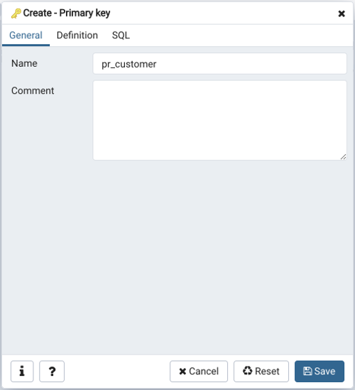
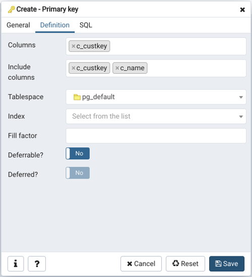
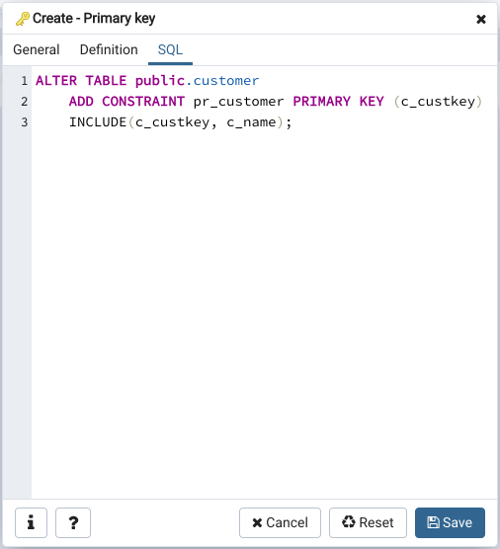

Primary key Dialog¶
Use the Primary key dialog to create or modify a primary key constraint. A primary key constraint indicates that a column, or group of columns, uniquely identifies rows in a table. This requires that the values in the selected column(s) be both unique and not null.
The Primary key dialog organizes the development of a primary key constraint through the General and Definition tabs. The SQL tab displays the SQL code generated by dialog selections.
Use the fields in the General tab to identify the primary key:
Use the Name field to add a descriptive name for the primary key constraint. The name will be displayed in the pgAdmin tree control.
Click the Definition tab to continue.
Use the fields in the Definition tab to define the primary key constraint:
Click inside the Columns field and select one or more column names from the drop-down listbox. To delete a selection, click the x to the left of the column name. The primary key constraint should be different from any unique constraint defined for the same table; the selected column(s) for the constraints must be distinct.
Use Include columns field to specify columns for INCLUDE clause of the index. This option is available in Postgres 11 and later.
Select the name of the tablespace in which the primary key constraint will reside from the drop-down listbox in the Tablespace field.
Select the name of an index from the drop-down listbox in the Index field. This field is optional. Adding a primary key will automatically create a unique B-tree index on the column or group of columns listed in the primary key, and will force the column(s) to be marked NOT NULL.
Use the Fill Factor field to specify a fill factor for the table and index. The fill factor for a table is a percentage between 10 and 100. 100 (complete packing) is the default.
Move the Deferrable? switch to the Yes position to specify the timing of the constraint is deferrable and can be postponed until the end of the statement. The default is No.
If enabled, move the Deferred? switch to the Yes position to specify the timing of the constraint is deferred to the end of the statement. The default is No.
Click the SQL tab to continue.
Your entries in the Primary key dialog generate a SQL command (see an example below). Use the SQL tab for review; revisit or switch tabs to make any changes to the SQL command.
Example¶
The following is an example of the sql command generated by user selections in the Primary key dialog:
The example shown demonstrates creating a primary key constraint named dept_pkey on the dept_id column of the dept table.
Click the Info button (i) to access online help.
Click the Save button to save work.
Click the Cancel button to exit without saving work.
Click the Reset button to restore configuration parameters.